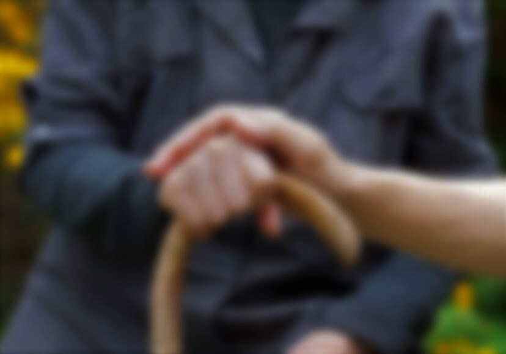

You are {{predict_res}}

Drugs
Levodopa is the most common drug, this drug
is the chemical precursor of dopamine.
This drug does not impact PD symptoms but
helps reduce side effects of levodopa,
particularly nausea, and aids in the absorption
of levodopa.
Exercise
PD almost always includes a gradual increase in
difficulty with balance, and drugs do not help
with this. So it is also important to include
activities to work on balance in your program.
Yoga and dancing are good options.
Attitude
important to maintain a positive attitude. Maintaining an active social life, meditation,
and seeing a counselor/therapist have all been helpful for you